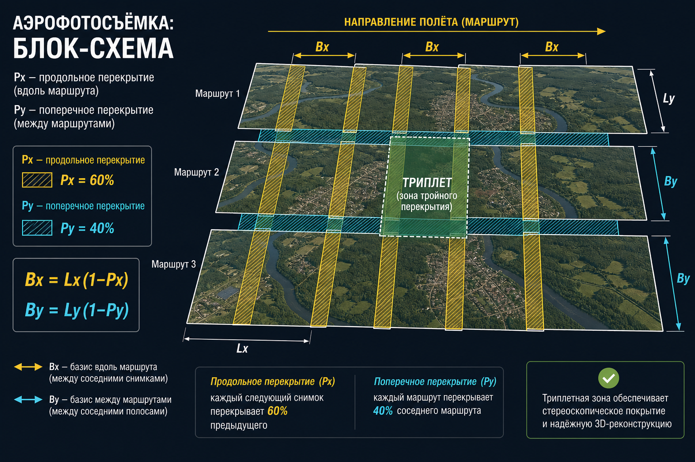
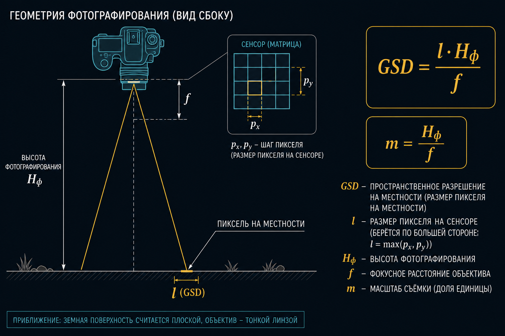
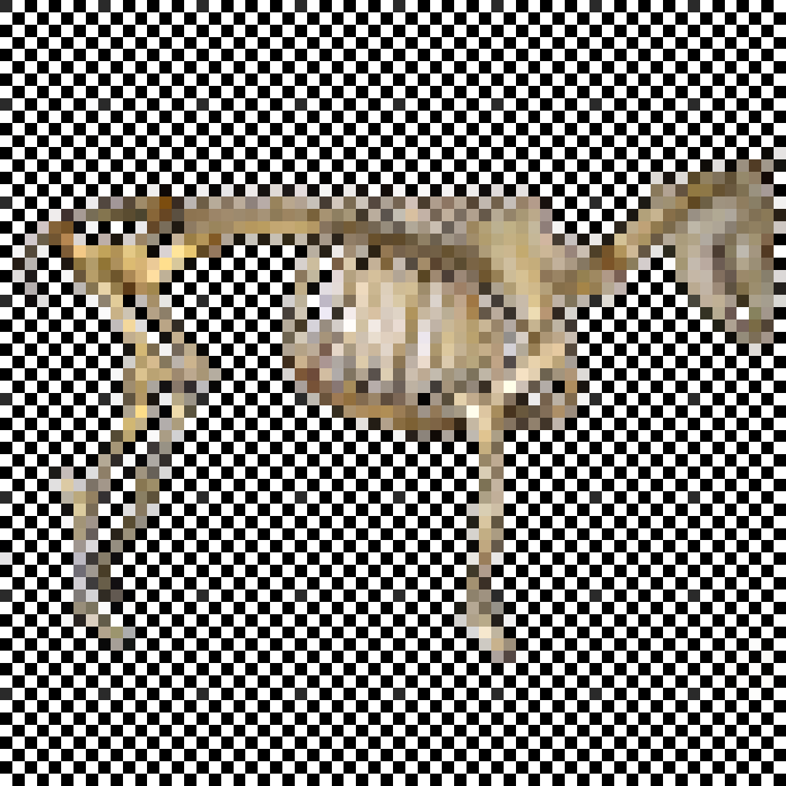
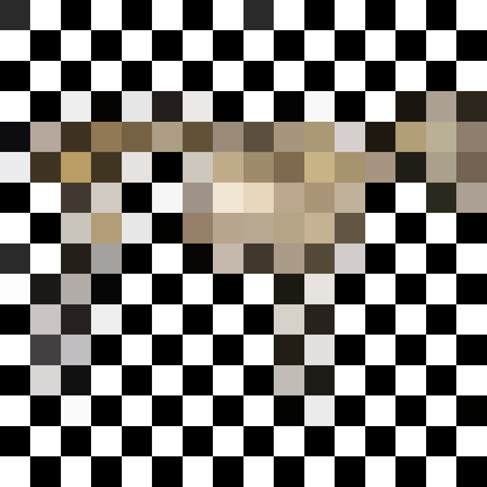
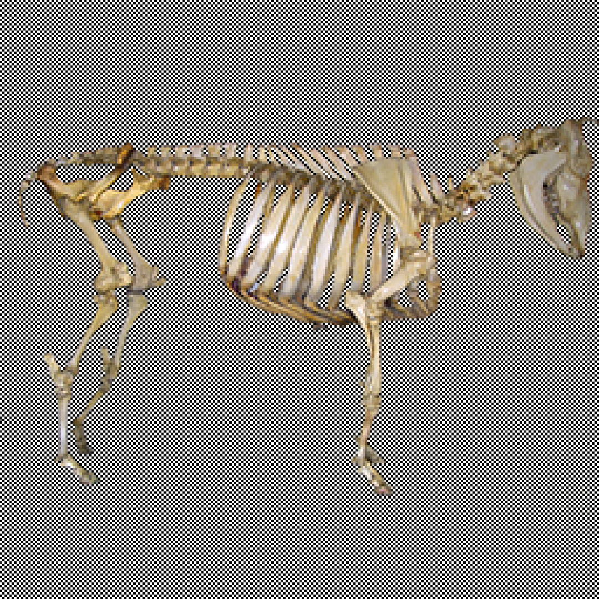
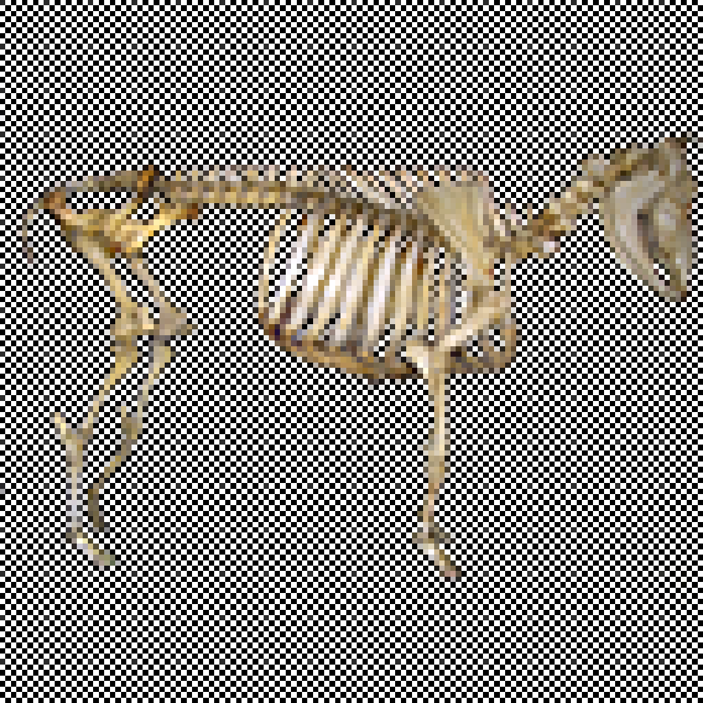

А04 · пара 1,5 ч · элементы · высоты · GSD · базисы · ПВО
Аэросъёмочные элементы
Величины, которые задают геометрические условия съёмки. Без них нет ни ТЗ, ни маршрута, ни допуска на орто.
Масштаб фотографирования 1:m
Отношение отрезка на снимке к одноимённому отрезку на местности. Для надира: m ≈ Hф / f.
m = Hф / f = L / lH и f — в одних единицах; L — сторона захвата, l — сторона кадра
Перекрытие снимка P
Доля площади снимка, покрываемая смежным кадром. Продольное Px — внутри маршрута, поперечное Py — между маршрутами.
Триплет
Зона тройного продольного перекрытия. По общим точкам связывают соседние стереопары: передают систему координат и масштаб фотограмметрических построений.
Базис фотографирования
Расстояние между соседними точками съёмки. Bx — вдоль маршрута, By — между маршрутами.
Bx = Lx (1 − Px)P в долях: 80% → 0,80. Lx = lx · m — продольный захват
By = Ly (1 − Py)

«Сделайте фотограмметрию» без масштаба, GSD и продукта — не задача.
От масштаба плана зависят сечение рельефа и допуск на контуры. Нормы — не зубрить все строчки, понимать логику.
| Рельеф | 1:5000 | 1:2000 | 1:1000 / 1:500 |
|---|---|---|---|
| равнина, уклоны до 2° | 1,0 м | 0,5 м | 0,5 м |
| всхолмлённый, до 4° | 2,0 м | 1,0 м | 0,5 м |
| пересечённый, до 6° | 2,0 м | 2,0 м | 0,5 м |
| горы, более 6° | 5,0 м | 2,0 м | 1,0 м |
Средняя погрешность высот ≤ 1/4 сечения. Контуры с чёткими очертаниями — ≤ 0,5 мм на плане относительно ближайших точек обоснования.
GSD
Ground Sample Distance — проекция одного пикселя на местности. Номинальное пространственное разрешение снимка, не точность ортофотоплана.

GSD = p · Hф / fp = lx / W — размер пикселя на матрице
Предустановки: БВС 120 м · самолёт 1,2 км · спутник 700 км. GSD ≠ точность орто.
Другая матрица: тот же захват, другой p.
Другой f или другой формат кадра.




Hф = Hабс − hсрне высота «по пульту над точкой взлёта»
Hаэр = 130 м, hместн = 275 м, Hист = 2350 м. Найти Hотн.
Hабс = Hист + hместн = 2350 + 275 = 2625 м
Hотн = Hабс − Hаэр = 2625 − 130 = 2495 м
Найти продольный базис Bx.
p = lx / W = 36 мм / 3600 = 0,010 мм
m = GSD / p = 50 мм / 0,010 мм = 5000GSD = 5 см = 50 мм; 1:5000
Hф = m · f = 5000 · 24 мм = 120 м
Lx = lx · m = 36 мм · 5000 = 180 м
Bx = Lx (1 − 0,80) = 180 · 0,20 = 36 м
Проверка через GSD: Lx = W · GSD = 3600 · 0,05 м = 180 м — то же.
Задано Hф = 500 м, Px = 60%, lx = 24 мм, f = 50 мм. Фактическая высота на 10% меньше. Как сдвинуть Bx, чтобы Px не изменилось?
m = H / f ⇒ Lx ∝ H ⇒ Bx ∝ Hпри фиксированных l и P
H′ = 0,9 H → Bx′ = 0,9 Bx. Базис уменьшить на 10% (иначе перекрытие вырастет).
Интервал фотографирования tи
Время между экспозициями соседних кадров одного маршрута. Базис выдерживают по времени, по координатам или визуально.
tи = Bx / WW — путевая скорость, м/с. 72 км/ч = 20 м/с
Hист = 300 м, W = 72 км/ч, lx = 18 мм, f = 24 мм, Px = 80%.
W = 72 / 3,6 = 20 м/с
m = 300 м / 0,024 м = 12 500
Lx = 0,018 · 12 500 = 225 м · Bx = 225 · 0,2 = 45 м
tи = 45 / 20 = 2,25 с
За выдержку t борт проходит W·t по местности; на матрице это смещение δ.
δ = W · t · f / Hфδ и f — в мм, если H и W·t согласованы
Старый ориентир: δ ≤ 0,05 мм на снимке для масштабов 1:10 000 и мельче. В цифре чаще смотрят ≤ 1,25 px по ЧКХ (А06).
W = 18 км/ч = 5 м/с, t = 1/500 с.
сдвиг на местности = 5 / 500 = 0,010 м = 10 мм
При 1/100 с уже 50 мм на местности. На матрицу переводят через масштаб: δ = 10 мм / m.
Билет: δдоп = 3 мм, f = 100 мм, W = 156 км/ч, H = 1565 м → из формулы находят tдоп.
tдоп = δдоп · Hф / (W · f)
W = 156 км/ч = 43,33 м/с; δ = 3 мм = 0,003 м; f = 0,100 м; H = 1565 м.
tдоп = 0,003 · 1565 / (43,33 · 0,100) ≈ 1,08 сна таком H и f допуск 3 мм на снимке очень мягкий; на БВС с коротким f и малым H выдержка жёстче
Проектный Px считают на hср. На hmax захват уже:
L(h) = l · (Hабс − h) / f
Чтобы на вершинах не провалиться ниже 55–60%, в план закладывают запас P или снижают H от «красивого GSD». Это та же формула базиса, только H берут локальную.
Подробный счёт конвергенции — Ф07 / Ф08. Сюда не тащите плановый Bx.
Пример: f = 8,8 мм, p = 2,35 мкм, GSDтреб = 5 см, перепад dh = 50 м.
Hф = GSD · f / p = 0,05 · 8,8·10−3 / 2,35·10−6 ≈ 187 м
На ±25 м рельефа GSD гуляет на dh/H ≈ 13%. Либо запас высоты, либо разбить ярусы, либо смириться в ТЗ.
ПВО
Планово-высотное обоснование — сеть опознаков с известными координатами, чтобы вписать блок снимков в систему объекта. Плановый, высотный или планово-высотный знак.
Круг должен читаться на орто. Ориентир: несколько пикселей GSD, контраст к фону, не в тени карниза.
Билет: орто 1:2000. На плане 0,2–0,3 мм уже предел «точки». На местности это 0,4–0,6 м. Марку делают заведомо больше GSD съёмки, не «как крестик в CAD».
Конспект · симулятор задания АФС · нормы контроля — А06
← → пробел — слайды
F — полный экран
N — заметки докладчика